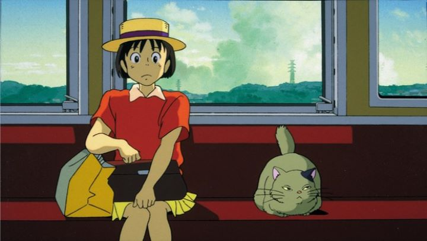

Being the first film from Studio Ghibli not directed by leading directors Hayao Miyazaki or Isao Takahata, 1995's "Whisper of the Heart" is a slice-of-life romance that I wasn't sure about when going into it. It turned out to be one of my favorite films from the studio, and if you read into the countless "Top 5" lists from fans of their catelog, you'll see I'm not the only one. It's a tragedy that director Yoshifumi Kondo would die shortly after its release (supposedly due to excess work, not uncommon in the anime industry), but he left a fantastic legacy in his single directorial work. Shizuku is a typical girl entering high school for the first time. In this time of her life, there's a lot of drama (we see a complicated conga-line of crush confessions within the first hour of the story). But generally, everyone is studying hard for exams and struggling to commit themselves to what direction their lives will take. Soon, Shisuku crosses paths with a young boy who works under an antique shop and studies to become a violin maker; despite not getting along at first, she finds herself inspired to follow her dream to become a writer.While youthful romance is a big part of the story, this is better labelled as a coming-of-age story. We've seen countless versions of these, but few tell the story as well as this film. It's sweet, heartfelt, funny and nostalgic without sacrificing realism and relatabilty between character relationships. It tackles several themes at once with aplomb, and I can''t recommend it enough based on the story alone.... so it's a shame that the visuals are among the weakest from the studio. The city feels real, and even looks real in a couple of shots, but most of the backgrounds and character designs are simplistic and bland. It's hard to believe the film was made as recently as 1995, it feels at least a decade older. A handful of scenes (especially the few fantastical-ones inspired by Shizuku's imagination) are well animated to make up for it. The music is good, but more memorable thanks to a great rendition of "Country Road" (yes, the American country song). The English dub is good, not great compared to newer dubs, but still perfectly serviceable, and the Japanese dub makes a great option too. There's a scene near the end where the main couple are riding up a steep hill with a bike, and the obvious metaphor implied there almost made me cry. Beautifully written and executed, it's a timeless film despite the visuals looking dated at release. There is a reason many people list "Whisper of the Heart" as one of their favorite Ghibli films.
- "Ani" More reviews can be found at : https://2danicritic.github.io/ Previous review: review_When_The_Wind_Blows Next review: review_White_Plastic_Sky